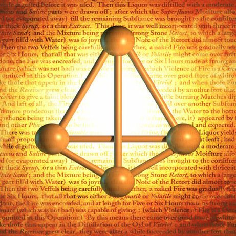

|  |
Discovered by : Hennig Brandt
Year Discovered : 1669
Isolated in Hamburg, Germany
Origin : The name is derived from the Greek ‘phosphoros’, meaning bringer of light, because it glows in the dark.
Description :
There are several forms of phosphorus. White phosphorus is manufactured industrially, glows in the dark, is spontaneously flammable when exposed to the air above 30°C and is a deadly poison. Red phosphorus, made by gently heating white phosphorus in the absence of air to about 250°C, does not glow, is stable and is not poisonous. This is the material, mixed with powdered glass, stuck on the side of boxes of safety matches on which the matches must be struck to light them. Phosphorus itself is essential to all forms of life since it is part of DNA, although there are many phosphorus compounds that are essential in the living cell. We take in about 1 gram of phosphate a day, and we store about 750 grams in our bodies, since our bones are mainly calcium phosphate. In the environment and in living things, phosphorus is present as phosphate, which consists of one phosphorus atom at the centre of four oxygen atoms. Phosphates are used in fertilisers and detergents and in metal coatings to prevent corrosion. However, excess phosphates in rivers and lakes cause an over-growth of slimy green algae, which robs the water of its life-supporting oxygen.
|